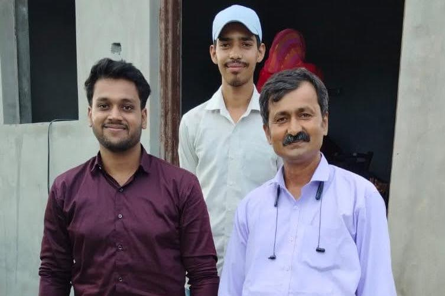

The Interview Round (Marriage Edition)
Remember when your Mama and Brother showed up at my house? I was sweating more than a MacBook running 50 Chrome tabs. They were there to finalize the deal, and honestly, I felt like I was being interviewed for a CEO position with no resume. Luckily, they liked the 'product,' and the merger was approved!
